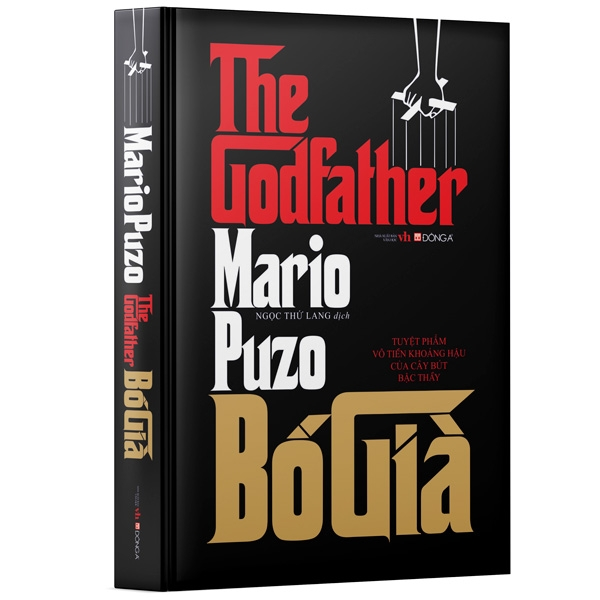
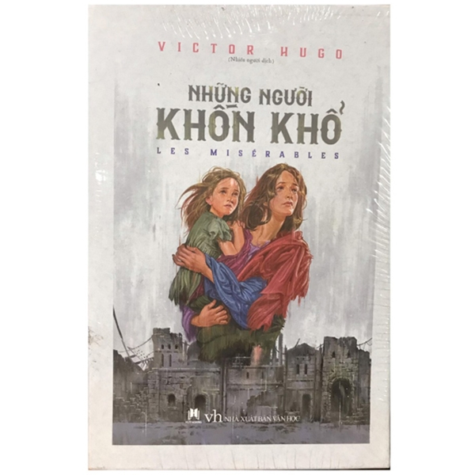
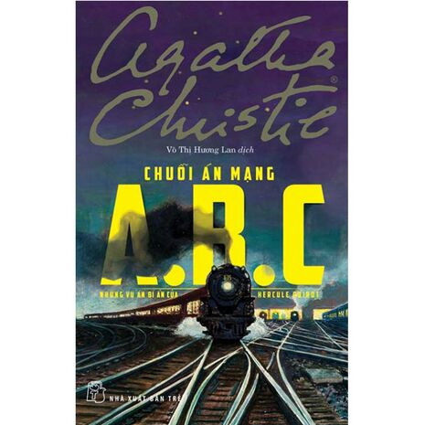
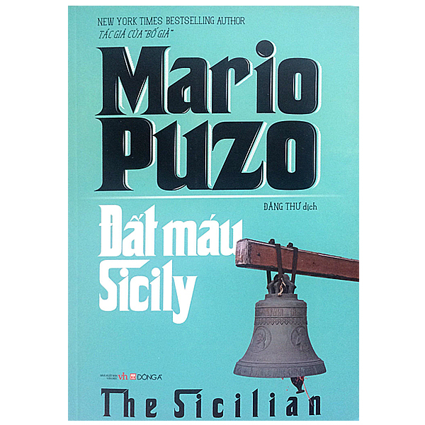

About me
I am studying Logistics and SupplyChains
- Fullname: Quan Le
- Country: Vietnam
Education
- ThaiNguyen Secondary School
- Ly Tu Trong Highschool
- International University
Scores
| Math | Physics | IT | ||
|---|---|---|---|---|
| Math 1 | Math 2 | |||
| 2019 | 8 | 0 | 9 | 10 | 2020 | 10 | 0 | 2 | 9 |
| 2021 | 8 | 0 | 8 | 8 |
Social Media
Instgram: wu44n
Facebook: Quan Le
Book

Bố Già
Một kiệt tác hiện đại,The Godfather là bức chân dung nhức nhối về thế giới ngầm tội phạm những năm 1940.

Hai Số Phận
“Hai số phận” không chỉ đơn thuần là một cuốn tiểu thuyết, đây có thể xem là "thánh kinh" cho những người đọc và suy ngẫm

Những người khốn khổ
Cuộc sống cao đẹp của Jean Valjean-người phải ngồi tù suốt 19 năm chỉ vì một chiếc bánh mỳ, tình nhân ái bao dung và tấm lòng độ lượng của đức cha Mirien

Chỉ thời gian có thể cất lời
Lấy bối cảnh thành phố cảng Bristol nước Anh vào những thập niên đầu thế kỷ 20 mà nhân vật chính là một cậu bé, Harry Clifton, người mang trong mình những bí ẩn về thân thế

Vụ án A B C
Khi một sát nhân giết người hàng loạt bí danh ABC chế nhạo Poirot bằng những lá thư úp mở và giết người theo thứ tự chữ cái, Poirot tiến hành một phương pháp điều tra bất thường để truy tìm ABC

Đất máu Sicily
Sicily ngập tràn ánh mặt trời Địa Trung Hải,thoang thoảng hương cam chanh là xứ sở của núi non đẹp như tranh rải rác những phế tích lâu đời.